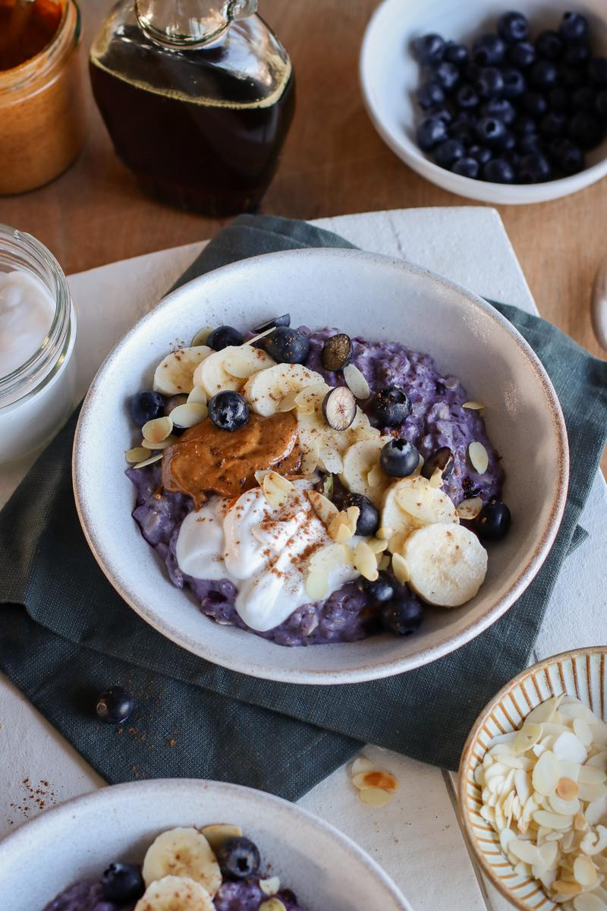

Ingredients
- 1 cup (81 g) rolled oats
- 2 cups (480 mL) unsweetened almond milk
- 1 medium banana,sliced
- ½ cup (75 g) frozen blueberries
- 2 Tbsp (14 g) ground flaxseeds
- 2 Tbsp (30 mL) maple syrup
- ½ tsp pure vanilla extract
- ⅛ tsp almond extract (optional)
Toppings
- 1 medium banana, sliced
- ½ cup (75 g) fresh blueberries
- ⅔ cup (160 mL) unsweetened coconut yogurt
- 3 Tbsp (45 mL) almond butter
Steps
- To a saucepan, add the oats, milk, banana, blueberries, and flaxseeds. Bring to a gentle boil, then reduce to a simmer for 7 minutes, stirring on occasion to prevent burning.
- Take the pan off the heat and stir in the maple syrup, vanilla, and almond extract.
- Divide the oatmeal between the bowls and top with banana slices, fresh blueberries, yogurt, and almond butter. Enjoy!